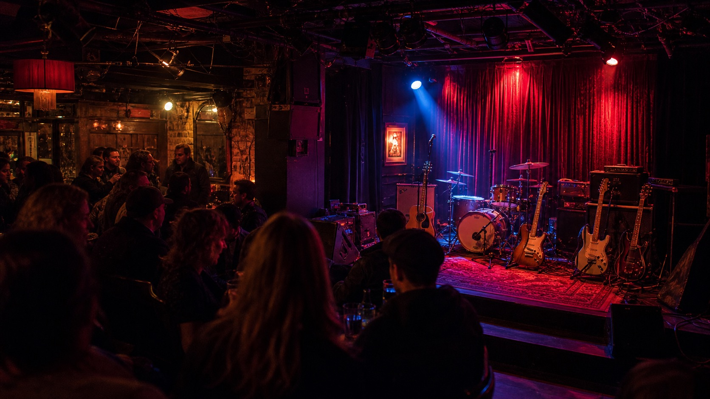

Vancouver's most
storied stage.
vancouverrailwayclub.com is available for acquisition. This is the exact-match domain for the Vancouver Railway Club, one of the city's longest-running independent live music venues. Located on Cambie Street in downtown Vancouver, the VRC has built decades of community music culture around its intimate stage, local artists, and neighbourhood identity.
The Venue
A Cambie Street institution in Vancouver live music
The Vancouver Railway Club has operated as one of the city's premier independent live music venues for decades. Its reputation rests on an intimate stage that has hosted hundreds of local and touring artists, a beer program that helped define the craft bar era in Vancouver, and a location in the heart of the Cambie Street corridor that gives it neighbourhood credibility no newly constructed venue can purchase. For a city that loses independent music venues at a steady rate, the VRC represents a category of cultural institution that is both irreplaceable and commercially viable.
Intimate Stage Capacity
The VRC's stage is designed for close-quarters live performance. Artists play within feet of the audience, creating the kind of energy that larger venues architect at great expense. For indie, folk, punk, and experimental acts, the room is the right size. Sold-out nights feel full without feeling crushed.
Craft Beer Program
The Railway Club built its reputation as a neighbourhood bar as much as a music venue. A thoughtful tap list featuring BC breweries, a comfortable bar room separate from the stage, and a kitchen that supports a full evening all contribute to per-head revenue that covers operational costs even on quieter booking nights.
Cambie Street Heritage Location
The Cambie Street corridor connects downtown Vancouver to the broader city via the Canada Line. The VRC sits within walking distance of transit, hotels, and the downtown core, making it accessible to both residents and visitors. Heritage location in a live music context means decades of accumulated audience loyalty and press coverage.
Community Music Culture
The Railway Club has served as a proving ground for Vancouver musicians across genres for years. Local acts that graduated to larger venues often cite the VRC as the room where they found their audience. That community identity, built show by show, is what the domain name carries and what a new operator inherits with it.
Domain Value
Why vancouverrailwayclub.com matters
Exact-match domains for named venues and cultural institutions are rare because they are rarely available. When a venue's name and its .com domain align perfectly, every search for that venue routes directly to the operator. For a live music venue that depends on ticket sales, show listings, artist bookings, and event discovery, that routing is the difference between owning your audience and renting it from third-party ticketing platforms.
- Exact-match .com for a named Vancouver cultural landmark with decades of accumulated brand recognition and press coverage
- Live music and hospitality search traffic is high-intent. People searching for "Vancouver Railway Club" are actively looking for shows, tickets, or the venue location, not researching abstractly
- The domain provides independence from third-party ticketing platforms that extract a percentage from every ticket sold through their discovery layer
- Strong local SEO baseline. A venue operating under its own exact-match .com will rank above aggregators for branded searches within months of launch
- Brand recall in the Vancouver music community is already built. The domain connects a new operator directly to that existing cultural equity
- Relevant beyond the venue itself. A Vancouver music brand, entertainment group, or hospitality operator in the Cambie corridor benefits from the neighbourhood association and the name recognition
Ideal Buyers
Who should acquire this domain
The most natural buyer is the Vancouver Railway Club venue itself, acquiring the exact-match domain for its own operations. Beyond the venue, any operator building a live music brand or hospitality identity in Vancouver's Cambie Street corridor will benefit from the name recognition and search authority this domain carries.
The VRC Directly
The venue operators are the most natural buyer. Owning the exact-match .com gives the Railway Club full control over its online presence, ticket sales, and artist booking inquiries
Entertainment Groups
Vancouver entertainment companies building a live music brand or acquiring the VRC as part of a venue portfolio acquisition would want this domain as part of the deal
Hospitality Operators
Bar and restaurant operators in the Cambie corridor looking to build on existing neighbourhood brand equity. The Railway Club name carries weight in the local market far beyond its square footage
Music Promoters
Independent promoters and booking agents building a Vancouver-rooted concert brand. The VRC name opens doors with artists, publicists, and local media that generic venue names cannot
Acquire vancouverrailwayclub.com
Submit your offer below. The domain holder is based in British Columbia and responds within two business days. Escrow is available on request for added security.
Frequently Asked Questions
Why is an exact-match domain so valuable for a live music venue?
Live music venues depend on direct search traffic from fans looking up show listings, ticket availability, and venue information. When the venue's name and the domain match exactly, every Google search for the venue name routes the operator to the top of results. An exact-match .com also provides credibility for artist booking, press coverage, and sponsorship conversations. Third-party ticketing platforms currently capture a portion of that traffic and revenue. Owning the domain returns that value to the operator.
Is this domain affiliated with the Vancouver Railway Club venue?
No. This domain is held independently as part of a British Columbia domain portfolio and is offered for sale. It is not currently operated by or affiliated with the Vancouver Railway Club venue. The domain is available for acquisition by the venue operators or any qualifying buyer. The current holder makes no claims about the venue itself.
How can I make an offer on this domain?
Use the contact form above or email owner@vancouverrailwayclub.com directly. The domain holder is based in British Columbia and responds within two business days. Transfer is completed via registrar push or escrow once terms are agreed. The process is straightforward and typically completes within a week of agreement.